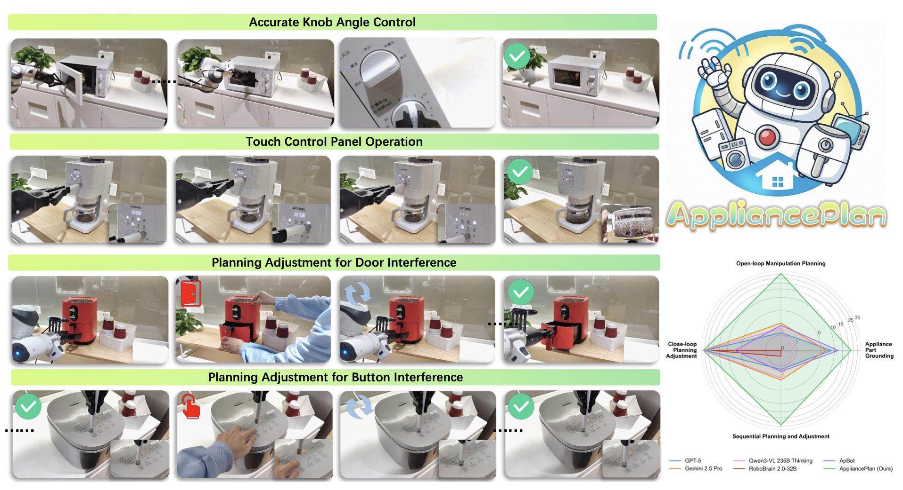
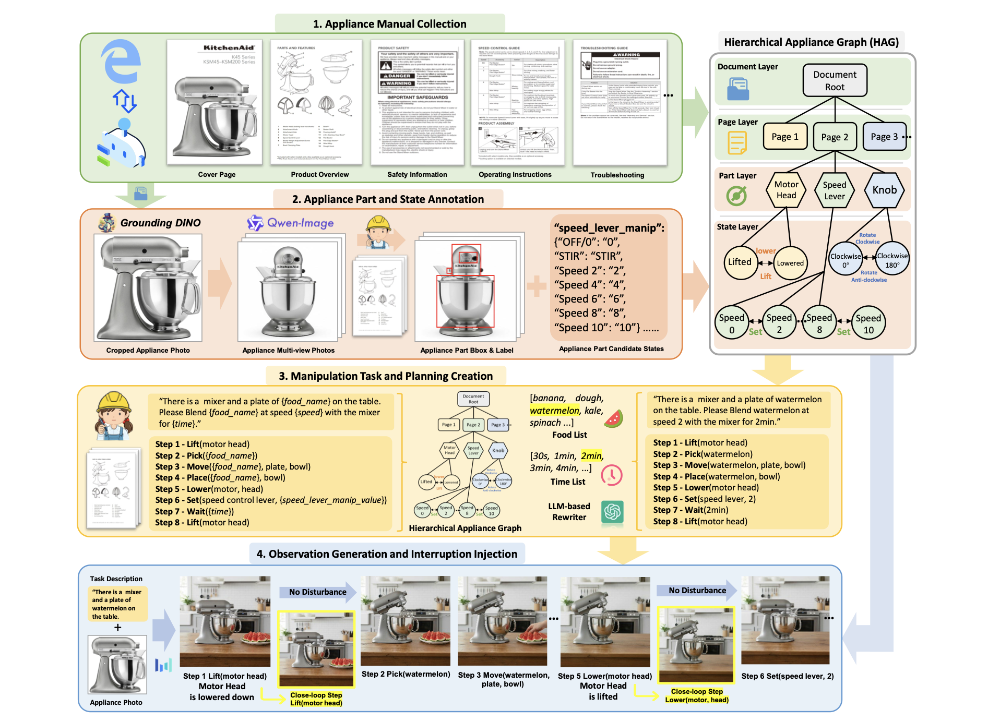
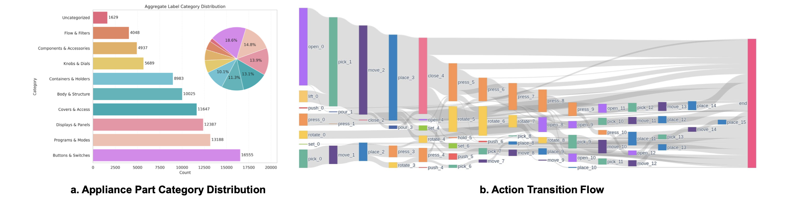
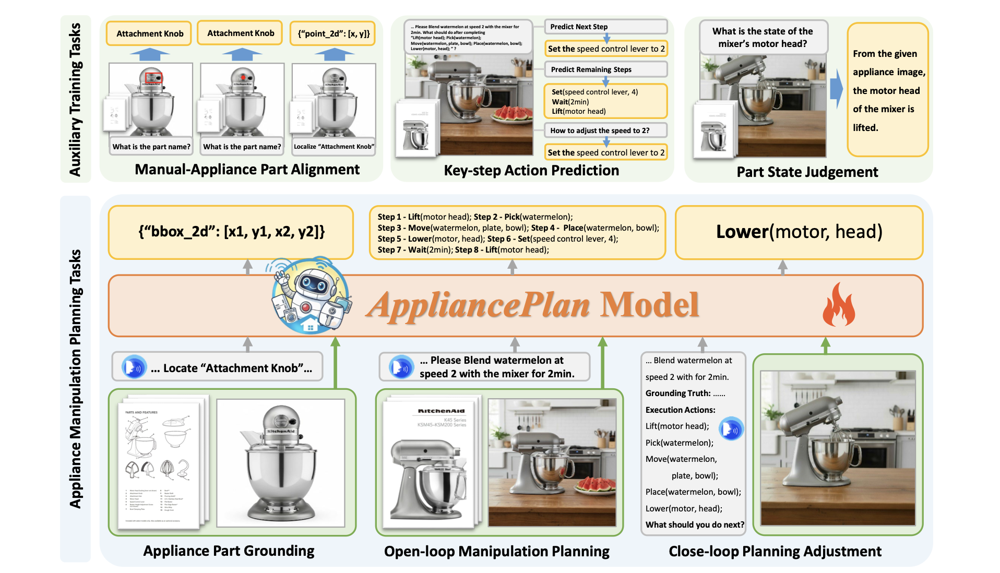
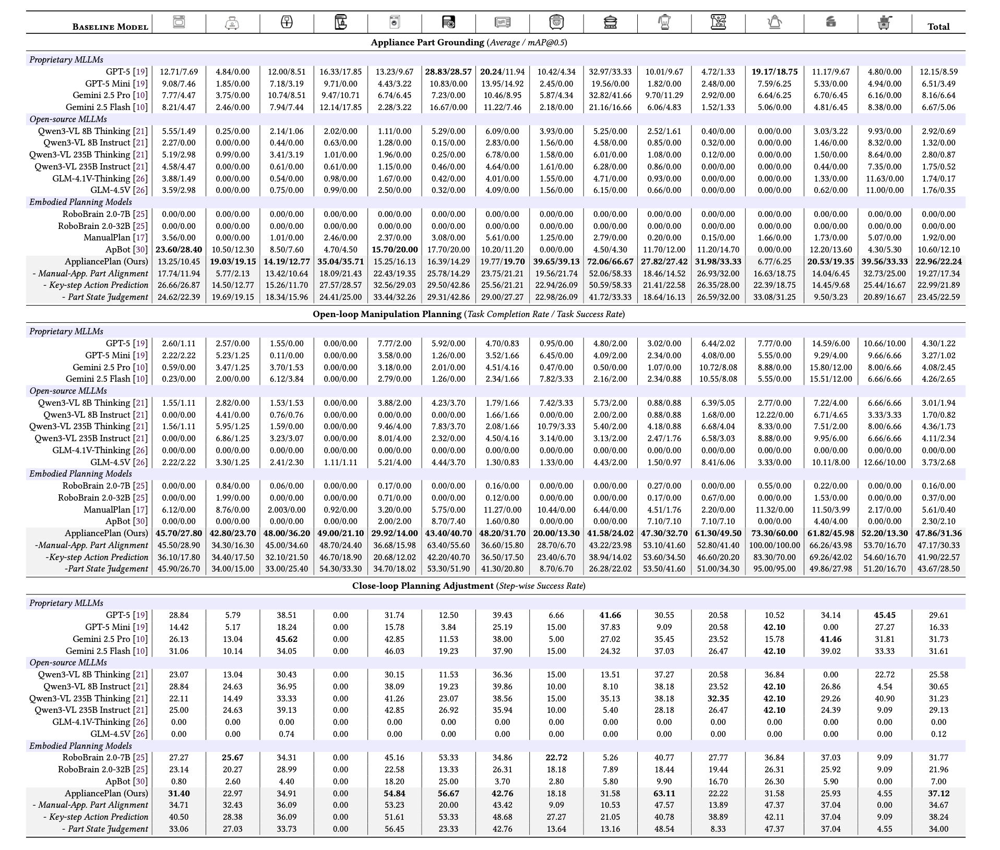
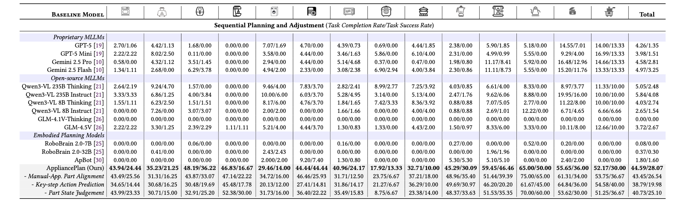

01 · Grounding
Part grounding
Locate the manual-named part in the observation and return a bounding box.
Manual-grounded appliance manipulation—from data synthesis to a unified planner.
Operating household appliances requires long-horizon planning that is state-dependent and robust to disturbances, yet existing large models fall short without sufficient task-oriented data. We propose MAGE, a scalable synthesis pipeline with a Hierarchical Appliance Graph (HAG) that generates grounding, planning, and closed-loop recovery data from manuals. With MAGE we build UseAppliance—22 categories, 89K+ part annotations, 53K+ tasks, 33K+ closed-loop steps—and train AppliancePlan, a 7B end-to-end planner. On RealAppliance-Bench it achieves over 10× the best baseline on open-loop planning, leads across all tracks, and transfers to real robots on six appliances.
End-to-end appliance operation
Precise knob control, touch-panel operation, and closed-loop replanning under disturbance—while outperforming strong large-model baselines on RealAppliance-Bench.

Capabilities of our AppliancePlan model. Left: AppliancePlan plans manipulation for diverse appliances and updates the plan when interrupted. Right: AppliancePlan outperforms strong large-model baselines on RealAppliance-Bench.
On RealAppliance-Bench it achieves over 10× the best baseline on open-loop planning (31.36% vs. 2.68% task success) and leads the sequential setting by a wide margin (28.07% vs. 4.08%). Real-robot experiments on six household appliances further confirm effective physical transfer (40.00% vs. 3.33% for GPT-5).
MAGE
MAGE builds a Hierarchical Appliance Graph (HAG) from document to page, part, and state, then synthesizes tasks, parameterized plans, planning-aligned observations, and interruption or recovery steps.

Overview of MAGE. The first two stages construct the Hierarchical Appliance Graph (HAG) via automated collection and human-verified annotation; the latter two consume the completed HAG to synthesize three types of data—part grounding annotations, open-loop manipulation plans, and observation images with closed-loop recovery data.
The fundamental bottleneck for manual-grounded appliance manipulation is the lack of large-scale training data. MAGE automates both HAG construction and data generation, with human verification gates after each stage.
Agents gather and classify real manuals into covers, overviews, safety, and operating pages.
Multi-view boxes and discrete state sets populate the part and state layers of the HAG.
Templates are instantiated into language instructions and atomic-action plans with full parameters.
Each step gets a state-aligned image; disturbances are injected to train closed-loop adjustment.
UseAppliance
UseAppliance is the first large-scale dataset for manual-grounded appliance manipulation planning, with long-tail part coverage and rich action-transition structure.

Statistics of UseAppliance. (a) Long-tail distribution of 89K+ part bounding boxes. (b) Action-transition flow of 53K+ open-loop planning tasks.
Part annotations follow a long-tail distribution: common parts such as doors, buttons, and knobs are densely labeled, while appliance-specific controls appear infrequently. Tasks average 8.15 open-loop steps, with action distributions varying by category—knob-heavy appliances emphasize Rotate, while panel-based appliances rely more on Press.
AppliancePlan
Built on Qwen2.5-VL-7B-Instruct and trained on UseAppliance, AppliancePlan jointly optimizes three main tasks and three auxiliaries as next-token prediction.

Overview of AppliancePlan model. AppliancePlan is an end-to-end model for manual-grounded appliance manipulation planning, trained with three main objectives and three auxiliary objectives.
Built on Qwen2.5-VL-7B-Instruct, it jointly learns part grounding, open-loop planning, and closed-loop adjustment, with auxiliaries for manual–appliance part alignment, key-step action prediction, and part-state judgment—all cast as next-token prediction on UseAppliance.
01 · Grounding
Locate the manual-named part in the observation and return a bounding box.
02 · Planning
Emit a full atomic-action sequence from manuals, scene, and instruction.
03 · Recovery
Use history and the latest observation to choose the next corrective step.
RealAppliance-Bench
AppliancePlan beats proprietary MLLMs, open-source MLLMs, and embodied planners on grounding, open-loop planning, closed-loop adjustment, and sequential recovery.
>10×
Open-loop planning vs. the best baseline (47.86 / 31.36 completion / success)

Results on RealAppliance-Bench across three standard evaluation tracks.
AppliancePlan ranks first on every track. Open-loop planning reaches 47.86% completion / 31.36% success—over 10× the best baseline (4.36% / 2.68%). Closed-loop adjustment achieves 37.12% step-wise success. Ablations show Manual–Appliance Part Alignment is most critical for grounding, while Key-step Action Prediction matters most for long-horizon metrics.

Sequential planning and adjustment results based on RealAppliance-Bench. This evaluation-only setting combines open-loop planning with online closed-loop correction. Entries report task completion rate / task success rate.
This end-to-end setting is the most realistic, as both the initial plan and subsequent corrections are model-generated. AppliancePlan achieves 44.59% completion and 28.07% success—versus 5.84% / 4.08% for the best baseline—confirming that planning and correction gains transfer to long-horizon execution, including recovery from the model’s own errors.
appliance manipulation planning · household robotics · multimodal foundation models
If you use this work, please cite the ACMMM 2026 paper.
@inproceedings{long2026useappliance,
title = {Scaling Manual-Grounded Appliance Manipulation with Data Synthesis and Unified Planning},
author = {Long, Yuxing and Kang, Lei and Yu, Ziyan and Gao, Yuzheng and Cheng, Bin and Zhang, Jiyao and Li, Xiaoqi and Yang, Haolin and Li, Dongjiang and Shen, Hui and Dong, Hao},
booktitle = {Proceedings of the ACM International Conference on Multimedia (ACMMM)},
year = {2026}
}PDF OpenReview CC BY 4.0